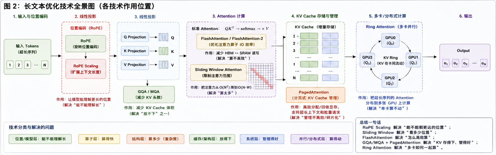
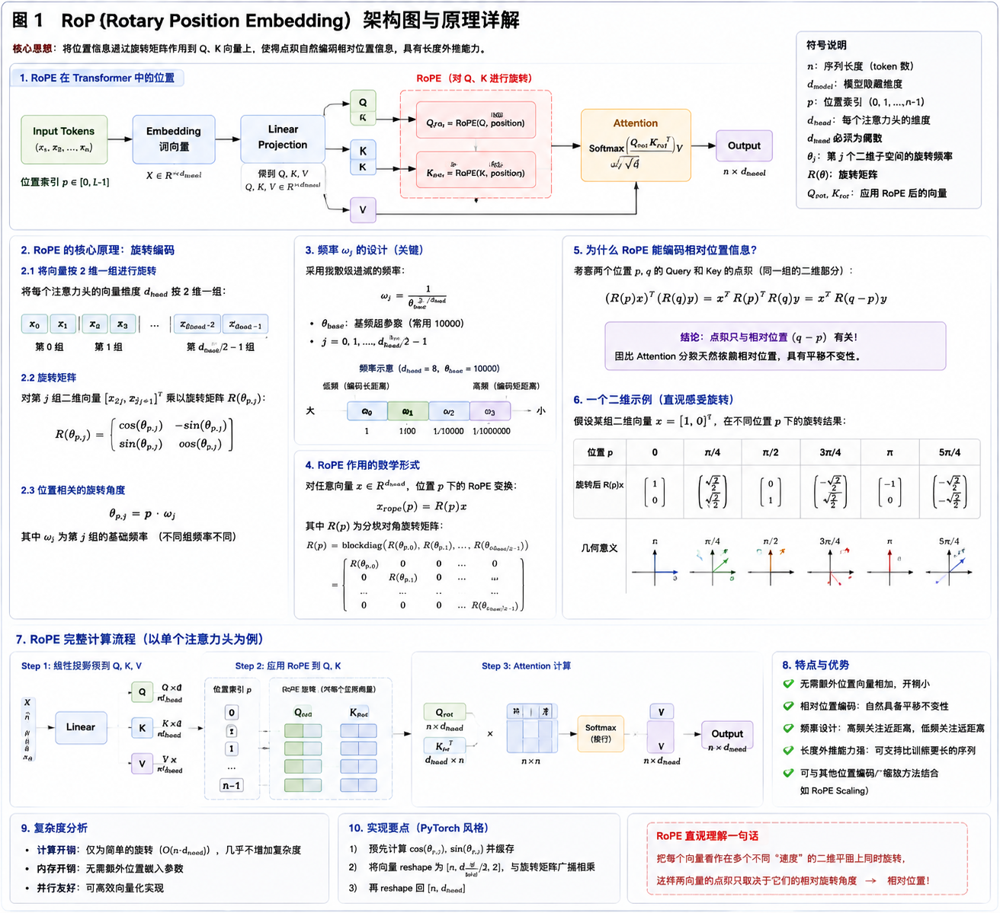

滚轮缩放 · 按住拖动平移 · 按 ESC 或点击空白处关闭
FlashAttention · GQA/MQA · PagedAttention · RoPE Scaling — 从算子融合到百万 Token 的工程全景
Transformer 处理长文本的性能崩塌来自三个独立但叠加的瓶颈：自注意力 O(N²) 的计算爆炸、GPU 显存带宽的物理限制（"显存墙"）、以及位置编码在训练分布之外的外推失效。三者必须同时解决，单独优化任何一个都无法突破天花板。
标准自注意力机制要求每个 Token 与序列中所有其他 Token 做点积运算。对于长度为 N 的序列，注意力矩阵大小为 N×N，计算量为 O(N²·d)。当 N 从 4K 增长到 128K 时，计算量增长 1024 倍——这意味着原本 1 秒完成的计算需要 17 分钟。
现代 GPU 面临严重的计算-带宽失衡：NVIDIA A100 的 FP16 算力达 312 TFLOPS，但 HBM 带宽仅 2 TB/s。这意味着每搬运 1 字节数据的成本相当于执行约 150 次浮点运算。标准 Attention 实现需要将完整的 N×N 注意力矩阵写入 HBM 再读回，数据搬运成本远超计算成本——Attention 是内存带宽受限（memory-bound）而非计算受限（compute-bound）的操作。
无论使用绝对位置编码还是 RoPE（旋转位置编码），当推理序列长度超过训练时见过的最大长度时，模型会遇到训练分布之外的位置信号。高频维度的旋转角度进入模型从未见过的相位区间，注意力权重崩塌，输出变成乱码。这就是"4K 训练的模型在 8K 处崩溃"的根本原因。
| 瓶颈层级 | 具体表现 | 量化影响 (N=128K) | 对应优化技术 |
|---|---|---|---|
| 算法层：O(N²) 计算 | 注意力矩阵 128K × 128K = 16G 个元素 | 单层注意力 ~64GB 显存 | FlashAttention |
| 架构层：KV Cache 膨胀 | 每 Token 每层存 K+V，随序列线性增长 | 70B 模型 ~30GB/请求 | GQA/MQA + PagedAttention |
| 模型层：位置编码 OOD | 高频旋转进入未见相位 | 困惑度爆炸、输出乱码 | RoPE Scaling / YaRN |
四大优化技术分别瞄准不同层级的瓶颈：FlashAttention 解决算子层的 I/O 效率、GQA/MQA 减少架构层的 KV Cache 体积、PagedAttention 优化系统层的显存管理、RoPE Scaling 突破模型层的外推限制。它们互相正交、可叠加使用。
上图展示了五大技术层级如何协同工作。在实际部署中（如 vLLM 推理框架），一个典型的请求会同时经过所有层：RoPE Scaling 让模型支持长位置编码 → FlashAttention 加速注意力计算 → GQA 压缩 KV Cache 体积 → PagedAttention 管理显存分配 → Ring Attention 在多卡间分配超长序列。

💡 提示：点击上方缩略图可全屏查看全图。
FlashAttention 的核心洞察：现代 GPU 上，Attention 的瓶颈不是算力不够，而是数据搬运太慢。通过将计算重新组织为"分块处理 + 片上融合"，将数据搬运量降低 80%，同时保持数学上完全精确的注意力结果（非近似）。
Tri Dao 等人在 Stanford 提出的开创性工作。核心思想是 IO-aware 算法设计：明确考虑 GPU 的 HBM（高带宽显存，容量大但带宽有限）和 SRAM（片上缓存，容量小但带宽极高）之间的数据搬运成本。
三个关键技术使其成为可能：① 分块计算（Tiling）将 Q/K/V 切分为适配 SRAM 大小的 Block，逐块计算注意力；② 在线 Softmax 通过维护行最大值和指数和的递推统计量，在不需要完整注意力矩阵的前提下逐块计算 softmax；③ 重计算（Recomputation）在前向传播时不保存完整注意力矩阵，反向传播时从 Q/K/V 重新计算，用少量额外计算换取 O(N²) → O(N) 的显存节省。
v1 在 A100 上仅达到理论峰值吞吐的 25-35%。v2 通过三个关键优化将利用率提升至 50-73%：① 减少非矩阵乘法运算，将 rescaling 操作推迟到最终步骤；② 调整循环顺序，将 Q 放在外循环、K/V 放在内循环，提高了每次迭代的并行度；③ 优化 warp 级工作分配，让 GPU 的 4 个 warp 之间减少同步开销和共享内存读写。
v2 在 A100 上实现了 2-3x 的端到端加速，在 H100 上达到 50-73% 的理论峰值利用率。同时原生支持 MQA（Multi-Query Attention）和 GQA（Grouped-Query Attention），只需传入更少的 KV 头即可。
v3 针对 H100/H800 的 Hopper 架构进行深度优化，利用三大硬件新特性：① WGMMA 异步 Tensor Core 指令，实现 GEMM 计算和数据搬运的重叠执行（overlap）；② TMA（Tensor Memory Accelerator），专用硬件引擎处理异步数据搬运；③ FP8 低精度支持，在 H100 上实现 1.5-2.0x 的额外吞吐提升，误差控制在可接受范围。
v4 进一步适配 NVIDIA 最新一代 GPU 架构，持续追求更高的硬件利用率。FlashAttention 家族已成为几乎所有主流 LLM 的标准组件——从 LLaMA、Mistral、Qwen 到 GPT 系列，PyTorch 的 scaled_dot_product_attention 函数已原生集成。
| 版本 | 年份 | 核心优化 | 目标硬件 | A100/H100 利用率 |
|---|---|---|---|---|
| FA-v1 | 2022 | Tiling + Online Softmax + Recomputation | A100 (Ampere) | 25-35% |
| FA-v2 | 2023 | 减少非 matmul 运算 + 循环重排 + Warp 优化 | A100 / H100 | 50-73% |
| FA-v3 | 2024 | WGMMA + TMA 异步 + FP8 低精度 | H100 (Hopper) | ~82% (FP8) |
| FA-v4 | 2025 | 下一代架构适配 | B200 (Blackwell) | TBD |
关于 FlashAttention 的详细数学推导和 CUDA 实现，参见 T20 高效注意力。
MQA/GQA 通过头间共享压缩 KV Cache 体积：标准 MHA 每个头独立维护 K/V，KV Cache 与头数成正比；MQA（Shazeer 2019）让所有 Query 头共享同一组 K/V，压缩最激进但质量下降明显；GQA（Ainslie et al. 2023）是分组折中方案——Query 头分成若干组、每组共享一组 KV，在几乎不损失质量的前提下大幅压缩 KV Cache，是当前新模型的最佳实践。DeepSeek-V2 的 MLA 更进一步，用低秩联合压缩把 K/V 投影到低维隐空间，实现更极致的压缩。
详见 T20 · 高效注意力（含 MHA/MQA/GQA/MLA 完整对比与数学原理）。
PagedAttention（vLLM，Kwon et al. 2023）借鉴操作系统虚拟内存分页思想：传统推理按最大序列长度预分配连续显存，导致 60-80% 的碎片化浪费；PagedAttention 将 KV Cache 切分为固定大小的 Block（如 16 tokens），通过 Block Table（类似页表）做逻辑-物理地址映射，按需分配、消除内外部碎片，并以 Copy-on-Write 支持跨请求共享 KV Block（如共享 System Prompt 的 KV）。
详见 DP08 · KV Cache 与推理优化（含虚拟内存类比、Block Table、Copy-on-Write 完整机制）；与 GQA/FlashAttention 的协同见 T20 · 高效注意力。
RoPE 通过旋转 Q/K 向量编码位置信息，但高频维度在超出训练长度时进入模型从未见过的相位区间。Scaling 技术的本质是调整旋转频率，使得在更长的序列中，模型看到的旋转角度仍然落在训练分布内——本质上是"骗"模型以为自己在处理短文本。
RoPE（Rotary Position Embedding，Su et al. 2021）对 Q 和 K 向量的每对维度施加位置相关的旋转：位置 m 处的向量被旋转角度 m·θi，其中 θi = base-2i/d。关键性质是旋转后的点积只依赖相对位置 (m-n)，天然支持相对位置编码。低频维度（i 小）编码长距离关系，高频维度（i 大）编码短距离区分。
以 LLaMA 2（训练长度 4K，base=10000）为例：当推理长度超过 4K 时，高频维度的旋转角度进入了训练时从未见过的相位区域。具体地，位置 4096 处最高频维度的旋转角度为 4096 × θ0 = 4096 × 1.0 = 4096 弧度，模型已经学好了这个范围内的模式。但位置 100000 处的角度为 100000 弧度——远超训练分布，注意力权重变得不可预测，困惑度飙升，输出变成乱码。
① 线性位置插值 PI（Position Interpolation，Chen et al. 2023）
最简单的方案：将位置索引等比压缩回训练范围内。如果训练长度 4K、目标 16K，则将每个位置除以 4。效果是所有旋转角度都缩小到训练分布内。但问题在于：高频维度的角度间距被压缩，丧失了局部位置区分能力——相邻 Token 的旋转角度差异过小，模型无法有效区分它们。适合 2-4x 扩展，更大倍数质量明显下降。
② NTK-aware Scaling（bloc97，2023 中）
核心洞察：不同频率的维度应该被不同程度地缩放。通过修改 RoPE base 值实现非均匀缩放：
效果：高频维度几乎不变（保留局部区分力），低频维度被拉伸（覆盖更长距离）。比 PI 质量更好，适合 2-4x 扩展。
③ YaRN（Yet another RoPE extensioN，Peng et al. 2023 末）
YaRN 引入三个关键改进：① 动态 NTK 缩放——自动识别哪些频率维度需要调整（"需要插值的"）和哪些不需要（"保持原样的"），通过温度参数控制；② 注意力缩放——对 softmax 的 logits 乘以 ln(scale) 的温度修正因子，缓解长序列的注意力熵变化；③ 分段处理——对不同频率区间应用不同策略（插值/外推/保持）。YaRN 可以在零微调的情况下将 LLaMA 2 的上下文从 4K 扩展到 32K（8x），微调约 100M tokens 后扩展到 128K。
④ LongRoPE（Ding et al.，Microsoft Research，2024）
LongRoPE 是当前的前沿方案：通过进化搜索算法为 RoPE 的每个维度独立搜索最优缩放因子（非均匀），并为不同位置范围（近距离 vs 远距离）使用不同的缩放策略。原始论文将 LLaMA 2 7B 从 4K 扩展到 2M tokens（512 倍），仅需约 1000 步微调（序列长度上限 256K）。LongRoPE2（2025）进一步引入"needle-driven"困惑度信号优化搜索，在 LLaMA 3 8B 上达到 128K 上下文，短文本性能保留 98.5%+。该技术已被用于 Phi-3-mini-128k-instruct 的生产部署。
| 方案 | 核心思想 | 扩展倍数 | 是否需微调 | 代表应用 |
|---|---|---|---|---|
| 线性 PI | 位置索引等比压缩 | 2-4x | 轻量微调 | LLaMA 1 扩展 |
| NTK-aware | 修改 base 实现非均匀缩放 | 2-4x | 零/轻量微调 | 社区方案 |
| YaRN | 动态 NTK + 温度修正 + 分段 | 4-32x | 零/100M tokens | LLaMA 2 扩展 |
| LongRoPE | 进化搜索逐维度最优缩放 | 最高 512x | ~1000 步微调 | Phi-3-128K |
| LongRoPE2 | needle-driven 搜索 + 混合训练 | 32-128x | 10B tokens | Phi 系列 |
ALiBi（Attention with Linear Biases，Press et al. 2022）采用完全不同的策略：不修改位置编码本身，而是在注意力分数上加一个与距离成正比的线性偏置项。偏置斜率在训练时固定，推理时可以通过调整斜率实现长度外推。ALiBi 的优势是不依赖训练长度，天然支持外推；劣势是线性偏置可能不如 RoPE 的旋转编码灵活。BLOOM、MPT 等模型采用此方案。
位置编码演进视角：位置编码仍在持续演进——RoPE 是当前主流，ALiBi 代表另一条外推路线，更远处还有完全放弃显式位置编码的尝试（如 RWKV 的线性递归路线）。"更长、更稳、零成本外推"是这条演进线的主旋律。
延伸阅读：位置编码方案的演进与全方位对比、RoPE Scaling 图解，详见 T10 · 位置编码 — 长上下文扩展。

💡 提示：点击上方缩略图可全屏查看全图。
单卡放不下完整序列时有两条路线。Sliding Window Attention 限制每个 Token 只关注固定窗口（如 4096 tokens），复杂度从 O(N²) 降到 O(N·W)，长距离信息靠多层堆叠逐层传播（Mistral 7B）；Ring Attention（Liu et al. 2023）是序列并行的核心方案：将序列均分到 N 个 GPU，KV Block 沿环形拓扑传递，每卡每步计算一个子块的注意力，且通信与计算可重叠，保持完整的全局注意力。Gemini 1.5 Pro 的 1M+ 上下文正是 Ring Attention 变体 + Context Parallelism 的工程落地。
详见 T20 · 高效注意力（含 Sliding Window/Ring Attention/Longformer 完整对比）。
百万级上下文的工程实现是全栈协同的结果：位置编码扩展提供数学基础、FlashAttention 提供单卡效率、Ring Attention 提供多卡扩展、KV Cache 管理提供系统支撑。没有任何单一技术可以独立实现这一目标。
Gemini 1.5 Pro（2024）是首个大规模部署百万 Token 上下文的模型。其技术栈包括：MoE（Mixture of Experts）架构减少每 Token 激活参数、Infini-attention 机制管理超长序列的注意力、Ring Attention 变体实现多卡序列并行。在"大海捞针"（Needle-in-a-Haystack）测试中，Gemini 1.5 Pro 在 1M tokens 的 haystack 中实现了 >99.7% 的 needle 召回率。
Anthropic 的 Claude 3.5 Sonnet 和 Claude 4.5 系列将上下文扩展到 200K+ tokens，特别在密集推理任务（如代码库分析）中表现出色。Claude 的架构优化侧重于"有效上下文"（effective context）——不仅接受长输入，还能在长序列中维持高质量推理。这与 Gemini 的"超长上下文"策略形成互补。
NVIDIA 的 UltraLong（2025）提供了一个从 128K 对齐模型扩展到 4M tokens 的完整训练方案：使用 YaRN-based RoPE Scaling + 特殊文档分隔符进行持续预训练，再用短上下文 SFT 保持指令跟随能力。UltraLong-8B（基于 LLaMA-3.1-Instruct）在多个长上下文 benchmark 上达到 SOTA，同时短文本性能无明显退化。
| 模型/系统 | 上下文长度 | 核心技术栈 | 关键指标 |
|---|---|---|---|
| Gemini 1.5 Pro | 1M+ | MoE + Infini-attention + Ring Attn | Needle recall >99.7% @1M |
| Claude 3.5/4.5 | 200K+ | 有效上下文优化 + 密集推理 | 代码分析强项 |
| UltraLong-8B | 4M | YaRN + 持续预训练 + SFT | 长文本 SOTA @8B 规模 |
| LLaMA 3.1 | 128K | RoPE base=500K + GQA | 原生长上下文 |
| Phi-3-mini-128K | 128K | LongRoPE + 轻量微调 | 小模型长上下文 |
| 场景 | 模型 | 硬件 | 序列长度 | 关键指标 |
|---|---|---|---|---|
| 代码补全（Copilot 类） | StarCoder 15B | A100 40GB × 2 | 8K → 32K | P99 延迟从 4.2s 降至 1.1s，吞吐提升 3.8x |
| 长文档摘要 | Llama 3 70B | H100 80GB × 4 | 64K → 128K | FlashAttention-2 启用后，单请求处理时间 8.3s → 2.7s |
| 多轮客服对话 | Qwen 14B | A100 80GB × 1 | 4K（平均 50 轮） | PagedAttention 使并发从 12 → 48 请求/卡 |
| 法律合同分析 | GLM-4 9B | A100 80GB × 1 | 128K | RoPE YaRN Scaling 零微调扩展，合同条款召回率 94.7% |
| 延迟指标 | 未优化 | 四方案全启用 | 优化倍数 |
|---|---|---|---|
| 首 Token 延迟（TTFT） | 6.8s | 1.2s | 5.7x |
| Token 生成速率（TPS） | 18 tokens/s | 52 tokens/s | 2.9x |
| P99 端到端延迟 | 42s | 9.5s | 4.4x |
| 维度 | FlashAttention | GQA/MQA | PagedAttention | RoPE Scaling | Ring Attention |
|---|---|---|---|---|---|
| 解决层级 | 算子 I/O | 架构设计 | 系统管理 | 数学外推 | 分布式并行 |
| 核心收益 | 速度 2-7.6x | KV Cache ↓60-97% | 并发 ↑2-4x | 长度 ↑4-512x | 长度 ×设备数 |
| 数学精确性 | 精确（非近似） | 有损（近似） | 精确 | 有损（近似） | 精确 |
| 是否需要训练 | 否（推理即用） | 是（架构设计时） | 否（推理即用） | 零/轻量微调 | 否（推理即用） |
| 典型组合 | 全部叠加使用：FlashAttention + GQA + PagedAttention + RoPE Scaling + Ring Attention | ||||
在实际部署中，四个方案通常同时启用。以 Llama 3（70B）在 A100 80GB 上的长文本推理为例，阶梯式叠加效果如下：
| 配置 | 最大序列长度 | 推理吞吐量 | 显存占用 |
|---|---|---|---|
| 标准 Attention | 4K | 基线 | 基线 |
| + FlashAttention | 8K | +2.5x | -60% |
| + GQA | 16K | +4x | -75% |
| + PagedAttention | 32K | +6x（并发 3-5x） | -85% |
| + RoPE Scaling | 128K | +6x | -85% |
| 方案 | 实现难度 | 改动范围 | 是否需要重新训练 | 典型集成方式 |
|---|---|---|---|---|
| FlashAttention | ⭐⭐（已有开源实现） | 仅替换 Attention 算子 | 否 | pip install flash-attn，一行代码启用 |
| GQA | ⭐⭐⭐（需调整模型架构） | 模型 KV 头数配置 | 需要重新训练或微调 | 模型定义中设置 num_key_value_heads |
| PagedAttention | ⭐⭐（推理引擎已内置） | 推理引擎配置 | 否 | 使用 vLLM 引擎，默认启用 |
| RoPE Scaling | ⭐（超参数调整） | 推理配置 / 少量微调 | 否（NTK/YaRN 可直接推理） | 修改 config.json 中的 rope_scaling 字段 |